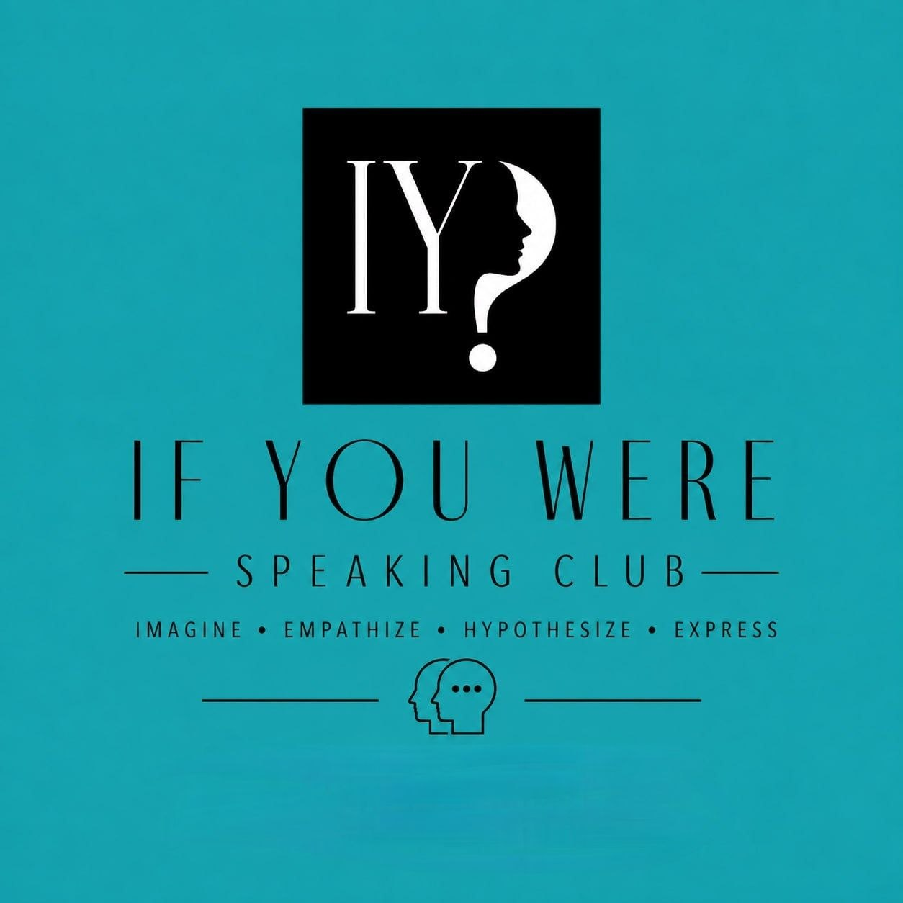

Speaking Club
A small group session (4–6 people) on a real-world topic chosen in advance. The teacher facilitates, corrects lightly, and keeps everyone speaking.
👇 See all 9 clubsOrganised sessions with a COSYlanguages teacher. Speaking clubs on real topics, and original-language cinema nights. Free for everyone.
New to our Speaking Clubs? Follow our level-calibrated roadmap to build confidence, expand vocabulary, and achieve conversational fluency with our native teachers.
Start with Let's Celebrate or The Greatest Quotes. Topics are tailored to everyday life, cultural rituals, and core vocabulary.
Join My Life With & Without or Debatable & Relatable. Unpack personal choices, express regrets, and debate mild controversies.
Challenge yourself in Keeping Up with Science, Mind Matters, or I Couldn't Help But Wonder. Discuss biology, psychology, and abstract philosophy.
| Event Title | Language | Type | Action |
|---|---|---|---|
| Does Inclusive Language Make Us Equal? | English | Speaking Club (Wonder) | Explore Session ➔ |
| Why Do I Spend More When I Earn More? | English | Speaking Club (Wonder) | Explore Session ➔ |
| Do We Have "No Time" or Just No Desire? | English | Speaking Club (Wonder) | Explore Session ➔ |
| Do We Carry a Collective Self-Guilt for the Planet? | English | Speaking Club (Wonder) | Explore Session ➔ |
| Are Traditions a Hidden Monogamy? | English | Speaking Club (Wonder) | Explore Session ➔ |
New sessions are updated weekly. Message us on WhatsApp to request a topic or join the next live discussion!
Whether you want to debate deep topics, enjoy a movie, sing along, or play interactive games, we have a session for you.
A small group session (4–6 people) on a real-world topic chosen in advance. The teacher facilitates, corrects lightly, and keeps everyone speaking.
👇 See all 9 clubsWatch a short film or scene in the target language, then discuss it as a group with the teacher. Focus on listening comprehension and natural reaction vocabulary.
🍿 Enter Cinema ClubLearn languages through the power of music! Sing along to timeless songs, analyze rich slang words, master native accents, and discuss cultural contexts with a native COSYlanguages teacher.
🎶 Enter Karaoke ClubConnect, compete, and speak! Play interactive, multi-player vocabulary, debate, charade, and listening games—crafted beautifully for offline couch and online hybrid play together.
🎮 Enter Game ClubFrom science to philosophy, our clubs cover the topics that matter to adults.

Real science news, made discussable. Each session unpacks a recent discovery or trend.
View Club & History →
Festivals, traditions, and the rituals that bring people together.
View Club & History →
One quote. Multi-faceted café debate. Join Marcus Aurelius, Alan Watts, and Oscar Wilde over espresso to unpack endless interpretations.
View Club & History →
Perhaps our minds are not puzzles to be solved, but landscapes to be gently wandered through. Welcome to a sanctuary of quiet reflection where we unravel our habits, our vulnerabilities, and our silent thoughts.
View Club & History →
Each session explores life before and after one thing — a habit, a person, a city, a decision.
View Club & History →
Hot takes and genuine dilemmas. Each session presents a statement you'll passionately agree with.
View Club & History →
Random ideas where we speculate about various things, ask poetic questions, and develop deep philosophical reflection.
View Club & History →
Step into another skin, another role, or another reality. Speculative hypotheses and radical empathy to restructure your mind and speaking skills.
View Club & History →Micro-discussions of outstanding books, audiobooks, and long-form podcasts. Carry ideas and reflections from chapter to chapter.
View Club & History →Speak original-language. Watch outstanding scenes, analyze rich regional slangs, and discuss powerful storyboards.
View Club & History →Sing your way to fluency! Analyze conversational song lyrics, master natural pronunciations, and unpack rich cultural contexts.
View Club & History →Explore every past session, study sheet, speaking prompt list, and original-language debate topic across all 9 clubs. Filter below to search instantly.
Ready to jump in? Connect with us on your preferred platform and we'll help you find the right session.